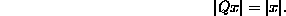

Preliminaries.
Write the squared length of a vector x as .
The least squares estimator  solves the problem:
solves the problem:

Which linear combination of the covariates is ``closest'' to the observed data, Y?
Define the squared length of the residual vector as the residual sum of squares (RSS), and as RSS/(n-p).
Define an  matrix to be orthogonal if Q satisfies (for any vector)
matrix to be orthogonal if Q satisfies (for any vector)

Orthogonal transformations preserve length.
We can do a transformation on a regression problem:

becomes

Due to the length preservation of Q and the fact that we are doing a least squares problem means that a solution to one is a solution to the other.
Can we choose Q to make the problem simpler and more stable?
Choose Q so that the upper block of  is upper triangular and the lower block is all zeroes.
is upper triangular and the lower block is all zeroes.
Now
and only the first part depends on  , giving
, giving
which can be solved recursively without inversion.